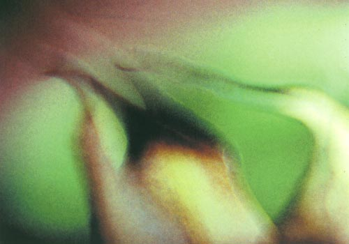

Details
Vernissage: 1. März 2002
Eröffnung: Dr. Dieter Schrage
Die Ausstellung war bis Ende Mai 2002 zu besichtigen.
Mit der Kamera gemalt

Vernissage: 1. März 2002
Eröffnung: Dr. Dieter Schrage
Die Ausstellung war bis Ende Mai 2002 zu besichtigen.